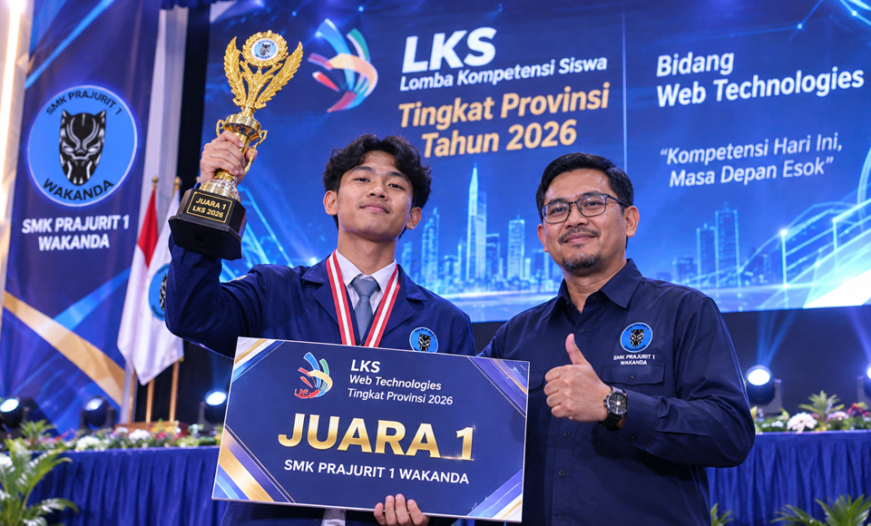

Tim RPL SMK PRAJURIT 1 WAKANDA Raih Juara 1 LKS Web Technologies Tingkat Provinsi
Delegasi siswa kelas XII Rekayasa Perangkat Lunak berhasil menyabet medali emas setelah menyelesaikan tantangan pengembangan aplikasi layanan publik secara cepat dan responsif.